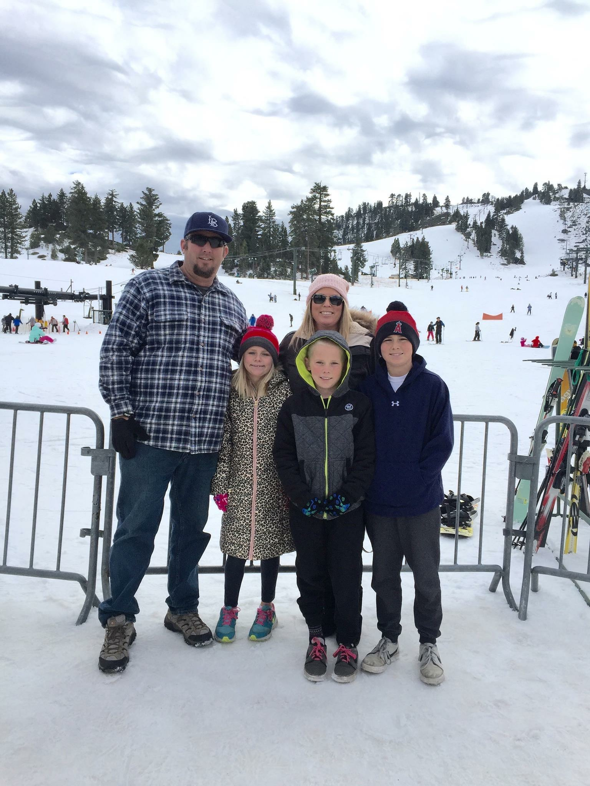
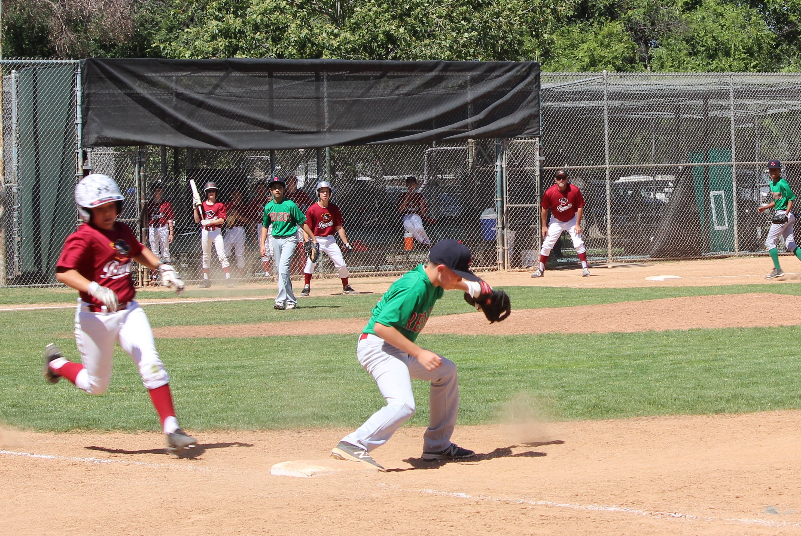
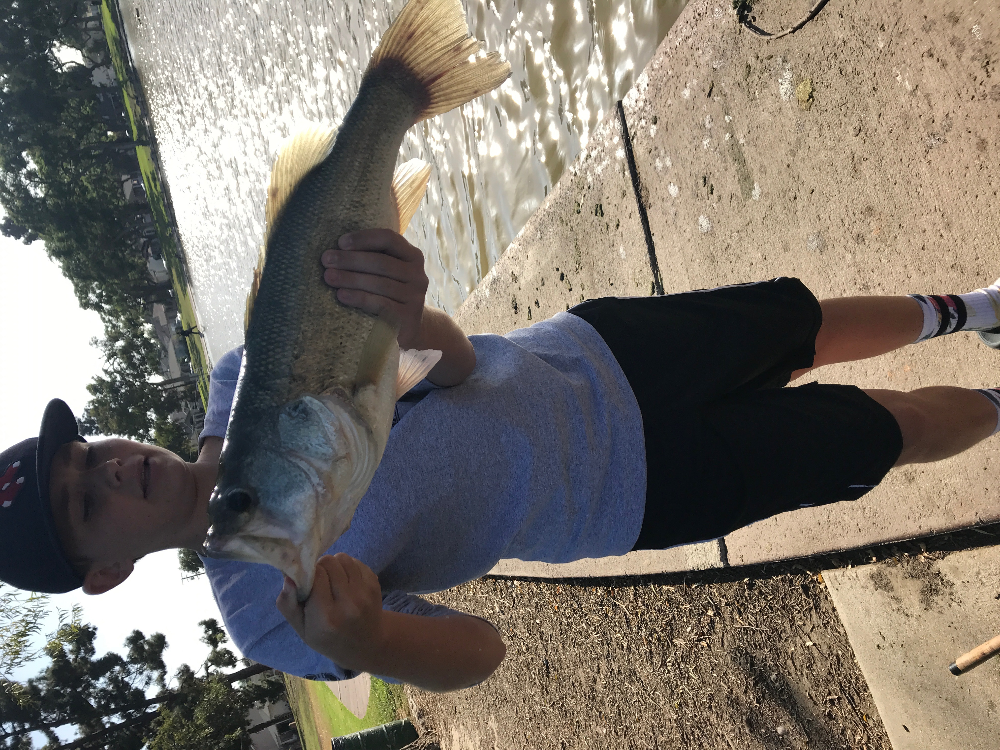

My Family
My family is the best, we have so much fun together, my mom works for a company called CBS, and my dad works for Orange County Flood Control, they are all so helpful no matter what it is. I am the oldest out of three kids I have a brother and a sister we are all about two years apart.

Some of the skills that I have is video creation, I make some videos on youtube it’s not that serious but once in awhile I would make a video edit it in iMovie and upload it to youtube. I also know how to code and play baseball very well. Click on the title to see my youtube channel.
Interest
I am interested in baseball, I have been playing for about 11 years and now get to go on and play high school baseball. Baseball is everything to me, I was a very good pitcher and second basemen but all of that went down when I fractured my growth plate in my elbow. I lost all of my speed in running, my velocity in pitching, I was out for about 3 or 4 months.
I wasn’t able to play couldn’t get stronger, but no all I did was sit at my house and when I had games I would sit the bench and not play, it was very emotional for me because I really love to play baseball and I have never broken or fractured anything in my life and when I finally do I facture it by doing something I love.

Hobbies
I don’t have too many hobbies but during on and off season I really like to fish and play paintball. I have really been into paintball for a couple of years now, at first it was kinda scary but after awhile I was able to get used to the pain and man up. This year I got my one gear and it made me feel like I was more safe because instead of shooting one paintball and some body I get to shoot 20 paintball in a second. I have been fishing for about all my life and it makes me feel better, because when you are outside sitting or standing and its quiet and then you have a fish on and it makes you feel good. It takes your mind off of everything, and takes all of the stress about school or work or whatever it is it.
